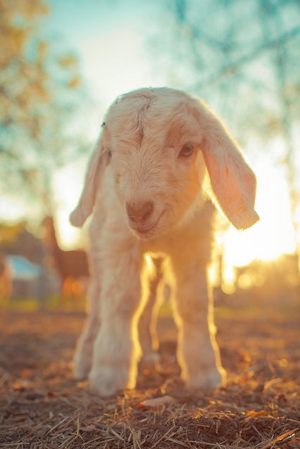

Goats are cool

Goats can make great pets and they can provide assitance for households with large properties or farmland. Some cool facts about goats are as follows:
- Goats were one of the first animals to be domesticated by humans
- Goat meat is the most consumed meat worldwide
- Goats can be taught their name, and will even come when they are called by their name
- Goats live a similar lifespan as dogs
Goats have many different uses for humans around the world. In some countries Goat meat is used as sustainability for humans, and in others, Goats are purely our friends.